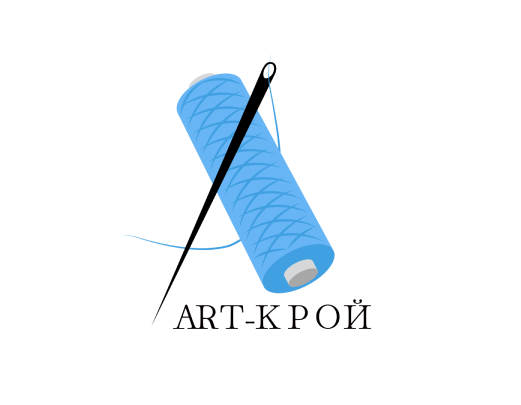
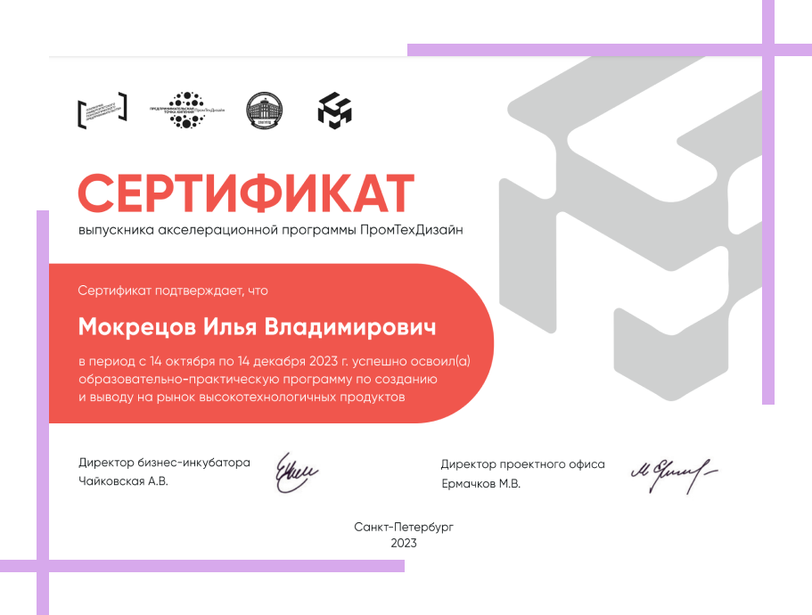

Проект 1
 В Петербурге создают приложение с 3D-примеркой одежды и AR
В Санкт-Петербургском государственном университете промышленных технологий и дизайна разрабатывают (https://sutd.ru/novosti_i_obyavleniya/announces/23312/) приложение-маркетплейс готовых лекал с возможностью 3D-примерки и AR-проекцией выкроек на ткань.
Умная раскладка и предварительная визуализация одежды перед приобретением выкройки позволит оптимизировать швейные операции. Благодаря этому бренды смогут экономить до 30% ткани и до 50% времени на этапе подготовки изделий к пошиву.
Решение вошло в список самых перспективных университетских стартапов федерального проекта «Платформа университетского технологического предпринимательства».
В СПбГУПТД заявляют, что разрабатываемое приложение не имеет аналогов в России. В планах у стартапа также выход на рынок стран СНГ. Запуск приложения в тестовом режиме с первой базой лекал и АR-проекцией выкроек запланирован на 2025 год.